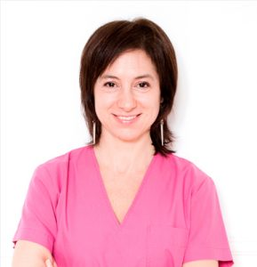
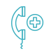
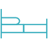
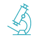
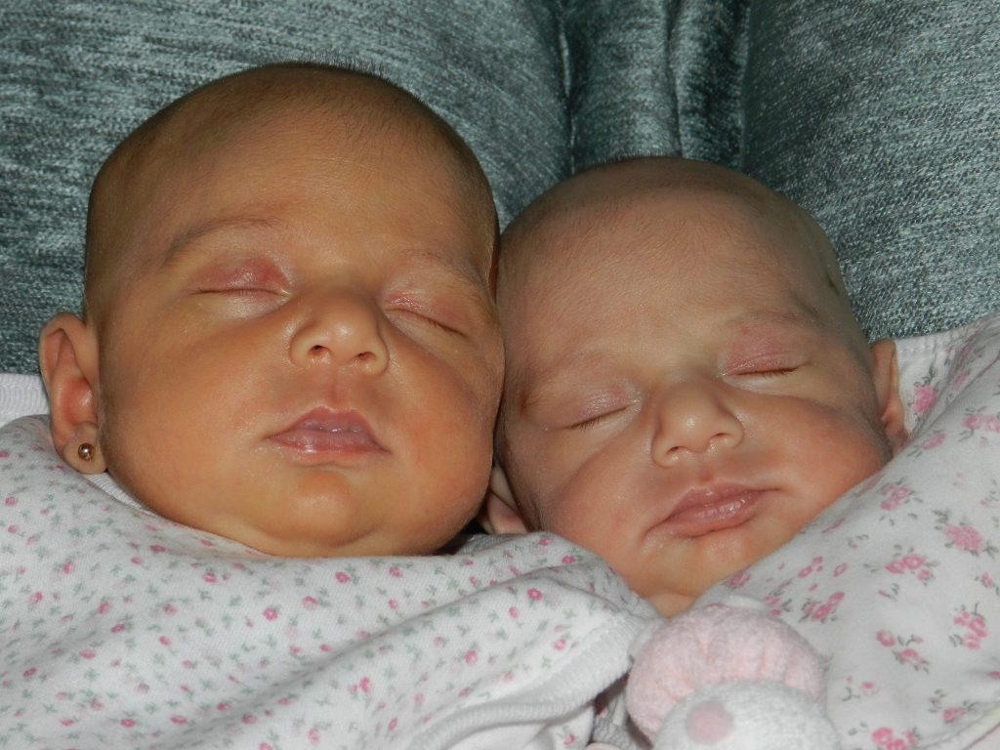
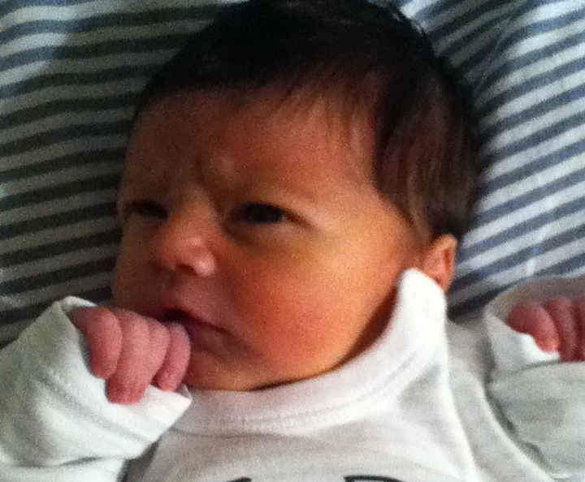
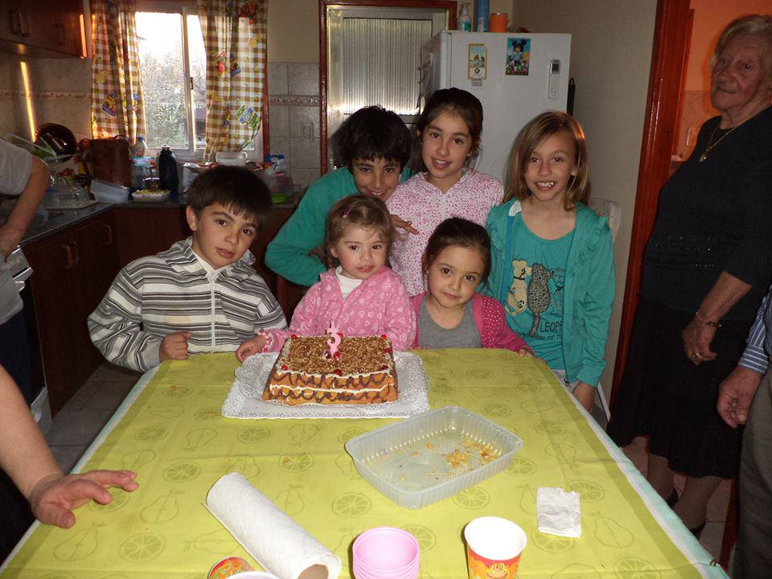

Directora del Laboratorio de Embriología
Lic. Sabrina De Vincentiis
Licenciatura en Ciencias Biológicas con especialización en Biología Molecular y Celular.
Todo sobre la fertilidad
Ofrecemos varios tratamientos para lograr ese preciado objetivo: dar vida. Contamos con el equipo de profesionales para que puedas cumplir tu sueño.
Bienvenidos a Seremas
Tenemos el equipo de profesionales para que puedas cumplir tu sueño.

En SEREMAS cada persona es única y por eso cada consulta es personalizada para evaluar cada historia y buscar el mejor tratamiento.

Ofrecemos a nuestros pacientes todos los recursos para hacer realidad el sueño de tener hijos, para eso contamos con las mejores instalaciones.
Un equipo de profesionales altamente calificado y con equipamiento de última generación.

En SEREMAS pretendemos que nuestros pacientes se sientan verdaderamente seguros con la confianza y contención que merecen.
Por qué elegirnos
Estos son los pilares que sostienen nuestro trabajo día a día.
Cada historia es distinta: evaluamos cada caso en particular para proponer el abordaje más adecuado.
Especialistas de distintas áreas trabajando en conjunto para un abordaje integral.
Instalaciones y tecnología pensadas para acompañar cada etapa del tratamiento.
Nuestro equipo se actualiza constantemente en las técnicas de la medicina reproductiva.
Protocolos estrictos de calidad en cada procedimiento de laboratorio y consultorio.
Contención emocional y seguimiento cercano desde la primera consulta.
Nuestras especialidades
Brindamos un asesoramiento integral basado en el conocimiento y la experiencia de cada uno de nuestros profesionales.
Nuestros procedimientos
Alteraciones leves del espermograma, dificultades coitales, alteraciones del cuello uterino, endometriosis leve, alteraciones ovulatorias y esterilidad sin causa aparente (ESCA).
La estimulación del ovario se realiza mediante hormonas que se dan a la paciente para inducir la ovulación, produciendo el desarrollo de varios folículos dentro de los cuales se encuentran los óvulos.
Preparación del ciclo y estimulación de la ovulación, obtención de los ovocitos por aspiración, obtención y preparación de la muestra de espermatozoides, microinyección de los óvulos, transferencia de los embriones y biopsia embrionaria.
Con la técnica de vitrificación de óvulos se consiguió una herramienta sumamente útil para preservar la fertilidad femenina en distintos escenarios.
Contamos con la metodología para criopreservar espermatozoides obtenidos de diversos sitios: semen, epidídimo, tejido testicular, orina y electroestimulación.
El desarrollo hasta el estadio de blastocisto es uno de los puntos críticos en el crecimiento y diferenciación del embrión.
Contamos con un programa de donación de gametas para aquellas parejas que así lo requieran, según las indicaciones de cada caso.
Estas técnicas utilizan sustancias que actúan como “crioprotectores” para resguardar la viabilidad del material que se criopreservará ante condiciones de temperatura extremadamente bajas.
Ofrecemos la posibilidad, siempre que la pareja así lo desee y existan ovocitos fertilizados o embriones en cantidad suficiente, de criopreservarlos.
Las técnicas de Diagnóstico Genético Preimplantacional (PGD) permiten estudiar las características genéticas del embrión antes de que se produzca su implantación en el útero.
Procedimiento que se lleva a cabo en el laboratorio y que consiste en hacer una pequeña ruptura en la envoltura del embrión para facilitar su salida una vez transferido.
Permite separar los espermatozoides de mejor calidad mediante la aplicación de campos magnéticos, por lo que también es conocida por el nombre de MACS.
Nuestro equipo
SEREMAS abrió sus puertas con un objetivo claro y definido: ofrecer a sus pacientes todos los recursos de la ciencia moderna para hacer realidad el sueño de tener hijos, aplicados por especialistas reconocidos en Argentina y en el exterior. ¡Conocelos!

Directora del Laboratorio de Embriología
Licenciatura en Ciencias Biológicas con especialización en Biología Molecular y Celular.
Director Médico
Médico cirujano recibido por la Universidad Nacional de Córdoba en 1977.
Conocenos
[COMPLETAR: video institucional]
Confianza y trayectoria
SEREMAS, Centro de Medicina para el Hombre y la Mujer, abrió sus puertas en agosto de 2006 fundado por el Dr. Santiago Brugo Olmedo y la Lic. Sabrina De Vincentiis.
Testimonios

“Les escribo para contarles que el 1 de agosto nacieron Catalina y Sofía. Les agradezco desde mi corazón por haberme ayudado a cumplir este sueño tan anhelado de ser madre.”

“Como padres estamos orgullosos del camino transitado y Seremas tiene mucho que ver en este camino.”

“Gracias al Dr. Brugo Olmedo por la felicidad que nos da la pequeña Josefina.”
Información para pacientes
Si tenés alguna de estas coberturas, la consulta y el tratamiento no tienen costo: los cubre directamente tu obra social o prepaga.
¿Tu obra social o prepaga no figura en esta lista? Consultanos igual: también podés abonar el tratamiento de forma particular.
Preguntas frecuentes
Información general para orientarte. Para lo específico de tu caso, siempre te conviene una consulta con el equipo.
Es una técnica de reproducción asistida en la que la unión entre óvulo y espermatozoide se realiza fuera del cuerpo, en el laboratorio, para luego transferir el embrión al útero. El equipo médico evalúa en cada consulta si es la opción más adecuada para cada caso.
En general, para una primera consulta de orientación no hace falta traer una orden médica, aunque sí es útil acercar estudios previos si los tenés. Esto puede variar según tu cobertura: algunas obras sociales y prepagas permiten sacar turno de forma directa, mientras que otras piden una derivación previa antes de la consulta. Ante la duda, lo mejor es consultarlo directamente con Seremas al momento de agendar.
Trabajamos con las siguientes coberturas, que cubren tanto la consulta como el tratamiento sin costo para el paciente:
Si tu obra social o prepaga no figura en esta lista, consultanos igual: también podés abonar el tratamiento de forma particular.
Para pacientes particulares (sin cobertura), la consulta se abona por adelantado mediante transferencia bancaria. Para tratamientos o intervenciones, el pago de la totalidad se realiza antes de la intervención, mediante transferencia bancaria o efectivo.
Depende del tipo de tratamiento y de la situación de cada paciente: puede ir desde unas pocas semanas en tratamientos de baja complejidad hasta varios meses en procesos de alta complejidad. En la primera consulta se conversan los tiempos estimados según cada caso.
En general se recomienda consultar si no se logra un embarazo luego de un año de búsqueda (o seis meses en mujeres mayores de 35 años), aunque una consulta temprana nunca está de más ante cualquier duda.
La mayoría de los procedimientos son mínimamente invasivos y se realizan con algún tipo de anestesia o sedación cuando corresponde. El equipo médico explica en detalle cada paso antes de realizarlo.
Es útil llevar estudios médicos previos relacionados a la fertilidad (si los tenés), un resumen de tratamientos anteriores y tu obra social o prepaga para consultar la cobertura.
Contacto
Arenales 1954, 1er piso, CABA
+54 11 5032-3358 / 3359 / 3360
Escribinos por WhatsApp. Te respondemos rápido y te guiamos paso a paso sobre tu consulta: respuesta inmediata del equipo médico, coordinación de turnos y presupuestos, y seguimiento personalizado.
Hablar con Seremas por WhatsApp